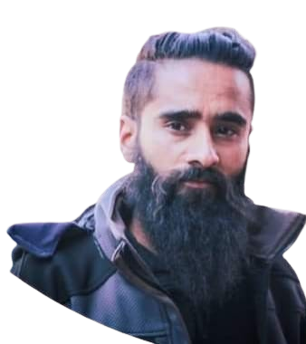

Swaraj Sagar Pradhan
President, SSMORC
Leading our efforts in astronomical research and education, ensuring we stay at the forefront of discovery and innovation.

Abhishek Shah
Director, SSMORC
Driving our research initiatives and collaborating with global scientists to unlock the mysteries of the cosmos.

John Doe
Education Coordinator
Developing educational programs and public outreach activities to engage and inspire future generations.
Jane Smith
Technical Specialist
Managing our observatory's technical systems and ensuring our equipment operates at peak efficiency.